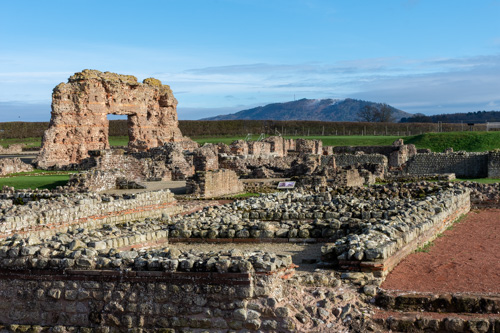
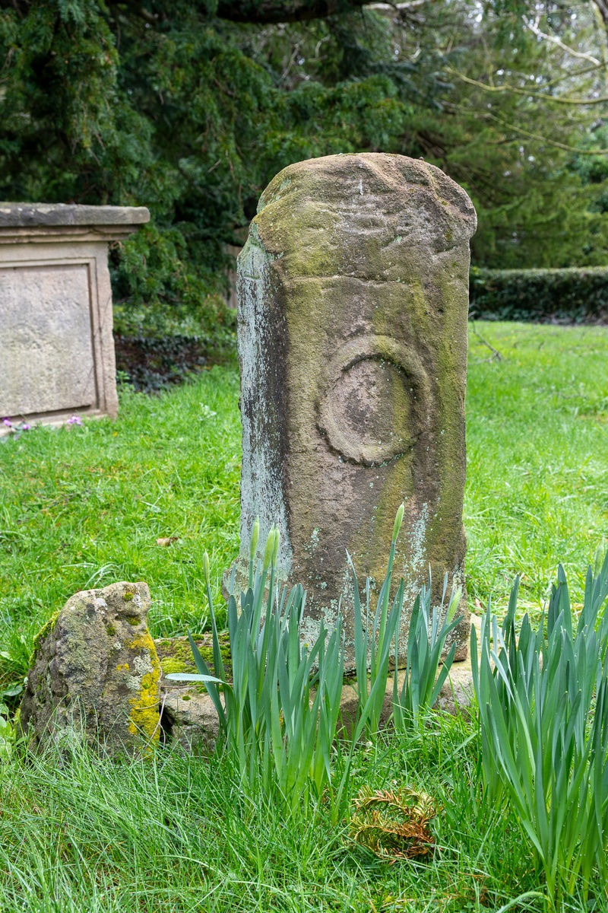

2. Roman Britain (43 AD to 410 AD)

Christianity spreads throughout the Roman Empire and reaches Britain...it becomes the official religion of the Roman Empire and starts to organise around dioceses...the Nicene Creed is written...the role of the Bishop is created and Rome becomes the Papacy...
Roman Britain was religiously diverse, with followers of the native Celtic religion, Roman religion, and imported eastern religions. People typically believed in a wide range of gods and goddesses. They worshipped several of them, likely selecting some local and tribal deities and some of the major divinities venerated across the Empire.
These separate religious traditions developed into a hybrid Romano-Celtic religion through cultural mixing. There is no direct evidence that Judaism was practised in Roman Britain.
Romano-British temples were sometimes erected at older, pre-Roman cultic sites. A new style of Romano-Celtic temple developed that was influenced by both Iron Age and imperial Roman architectural styles. Buildings in this style remained in use until the 4th Century.
Arrival of Christianity in Roman Britain
It is not known precisely when Christianity arrived in Roman Britain - in the 2nd and 3rd Centuries AD there was a constant influx of people from across the Empire, some of whom were likely Christian. It has been suggested that Christianity was perhaps introduced to Britain in the latter part of the 2nd Century. Christianity had reached Roman Britain by the 3rd Century of the Christian era as the first recorded martyrs in Britain were St. Alban of Verulamium (who is traditionally believed to have been beheaded sometime during the 3rd or 4th Century) and Julius and Aaron of Caerleon (who were martyred in the 3rd Century).

St Alban
St Alban is venerated as the first-recorded British Christian martyr sometime during the 3rd or 4th Century.
Reference: Wikipedia - St Alban

St Gregory, Morville - Window showing St Alban
Around 200 AD, the Carthaginian theologian Tertullian included Britain in a list of places reached by Christianity in his work, Adversus Judaeos. His contemporary, the Greek theologian Origen also wrote that Christianity had reached Britain.
Growth and Persecution of Christianity in the Roman Empire
During the 3rd Century Christianity grew slowly but steadily in the Roman Empire, the number of Christians in Britain was probably small, and it is unlikely there was any extensive church organisation before the 4th Century. This was in part due to the persecutions of the Christians led by the Roman Emperors at the time.
In 260 AD, the Emperor Gallienus issued an edict that decriminalised Christianity, allowing the church to own property as a corporate body.
The most severe persecution of Christians by the empire began in 303 AD under the Roman Emporer Diocletian. Nevertheless, it appears that British Christians suffered less during the Diocletianic Persecution than Christians elsewhere.
Constantine I and Official Tolerance to Christianity
The Roman emperor Constantine I becomes the first Roman emperor to convert to Christianity in 312 AD.
In 313 AD, the Roman Emperor Constantine I granted official tolerance to Christianity with the Edict of Milan (the edict was an agreement to treat Christians benevolently within the Roman Empire). The Edict of Milan gave Christianity legal status and a reprieve from persecution but did not make it the state church of the Roman Empire.
The First Council of Arles
A year later in 314 AD the first council of Arles took place, this was notable as it was attended by three British bishops, indicating the presence of Christianity in Roman Britain. One of the outcomes was that Easter should be held on the same day throughout the world, rather than being set by each local church.
Reference: Wikipedia - Synod of Arles

St Mary, Shawbury - Reredos showing the Last Supper
Instruments of Christ’s Passion
Representations of the Instruments of Christ’s Passion are displayed in many churches, with the object of remembering Christ’s suffering for the redemption of mankind. These can be in stained glass windows, on roof bosses, on reredos screens, or painted onto a number of small shields. Instruments shown include the cross, the crown of thorns, lances, hammer and nails, scourges, and the robe which Christ wore.
Stations of the Cross
Sometimes depicted in a series of paintings or carvings round the walls of a church. The Stations of the Cross represent the fourteen incidents which occurred in Christ’s last journey from his meeting with Pilate to his entombment. During a devotion of the same name, each station is visited in turn.
Organisation by Diocese
Around this time churches began to organise themselves into dioceses which were based on the Roman civil dioceses which were usually smaller than the Roman provinces (diocese is from the Greek meaning "administration").
Reference: Wikipedia - Diocese
Role of Episcopacy
Also at this time, the role of the episcopacy (bishop) is developed. The Bishop of Rome's office becomes the papacy as Rome was the capital of the Roman Empire.
Reference: Wikipedia - Bishop
The First Council of Nicaea
The First Council of Nicaea was a council of Christian bishops convened in the Bithynian city of Nicaea by the Roman Emperor Constantine I. The Council of Nicaea met from May until the end of July 325 AD. The council formulated a creed, a declaration and summary of the Christian faith, although several creeds were in existence, one specific creed was created to define the Church's faith clearly, to include those who professed it, and to exclude those who did not. The creed was amended in 381 AD by the First Council of Constantinople.
There was controversy in the Christian church at this time, the Arian controversy, a dispute between two theologians from Alexandria. As a result, the Council of Ariminium was called in 359 AD by the Roman Emporer - the council ruled in favour of the Nicene Creed.
References:
Wikipedia - First Council of Nicaea
Wikipedia - Council of Ariminum
The Official Religion of the Roman Empire
Then, in the reign of Emperor Theodosius, Christianity was made the official religion of the Roman Empire. The Edict of Thessalonica, issued on 27th February AD 380 by Theodosius I, made Nicene Christianity (which uses the creed from the First Council of Nicaea) the state church of the Roman Empire.
However, in Britain, Christianity was probably still a minority religion, restricted largely to the urban centres and their hinterlands. While it did have some impact in the countryside, here it appears that indigenous late Iron Age polytheistic belief systems continued to be widely practised. Some areas, such as the Welsh Marches, the majority of Wales (excepting Gwent), Lancashire, and the south-western peninsula, are totally lacking evidence for Christianity in this period.
Viroconium
Shropshire's Roman history includes the significant settlement of Viroconium, now known as Wroxeter, which was once the fourth largest city in Roman Britain (Viroconium was founded in the mid 1st-Century AD as a legionary fortress, and the city was established in the 90s AD). While the Romans didn't officially introduce Christianity, an early Christian community may have survived at Wroxeter after the Roman period, potentially leading to the later village. The Church of St. Andrew at Wroxeter, built on the Roman site, contains Roman materials and may have roots in this early Christian community.
Reference: English Heritage - Wroxeter Roman City

Viroconium and the Wrekin

Holy Trinity, Uppington - Roman altar found near the church
NEXT: Early Medieval Britain - Dark Ages - Anglo-Saxon Britain (410 AD to 1066 AD)